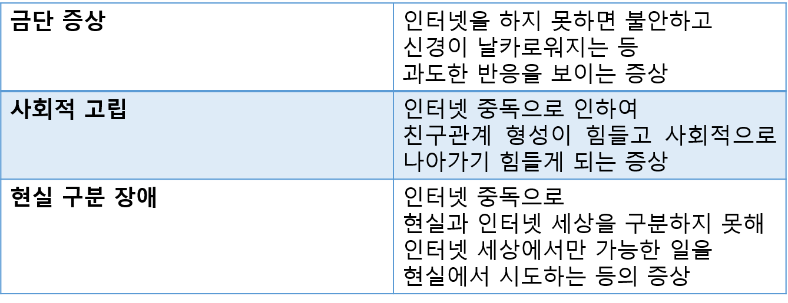
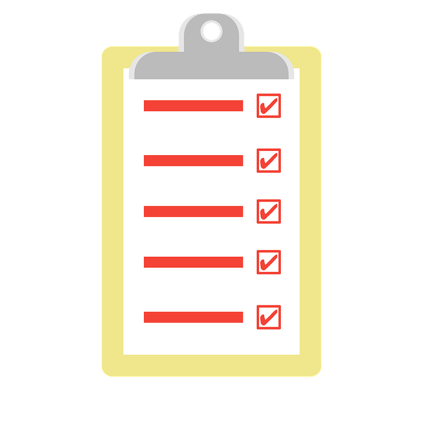

인터넷 중독1.인터넷 중독의 개요인터넷 중독이란 인터넷을 무리하게 사용하여 생기는 중독 질환이다.

출처 : https://theopen1.tistory.com/121
2. 인터넷 중독 증상 및 치료인터넷 중독의 증상으로는 다음과 같은 증상들이 있다.
치료방법으로는 다음의 4가지 치료 방법이 있다.
1. 자신이 인터넷을 과도하게 사용한다는 것을 받아들이고, 짧은 시간동안 인터넷을 할 수 있도록 스케줄을 관리한다.
2. 바깥약속을 구체적으로 짜고 실천하도록 노력하여 인터넷 시간을 줄인다.
3. 인터넷 중독을 줄이기 위한 도움이 되고 뚜렷하고 달성 가능한 목표를 설정합니다.
4. 인터넷 중독으로 인해서 그동안 방치해 놓았던 일들을 목록으로 정리해봅니다.
출처 : 네이버 지식백과, 국가건강정보포털
돌아가기